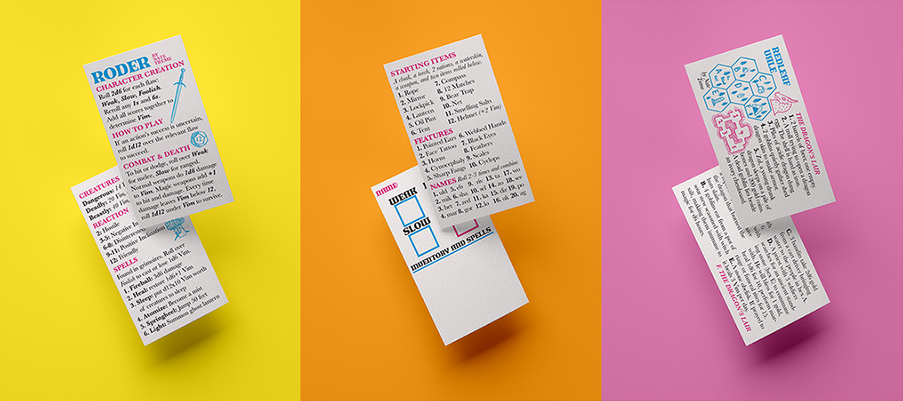
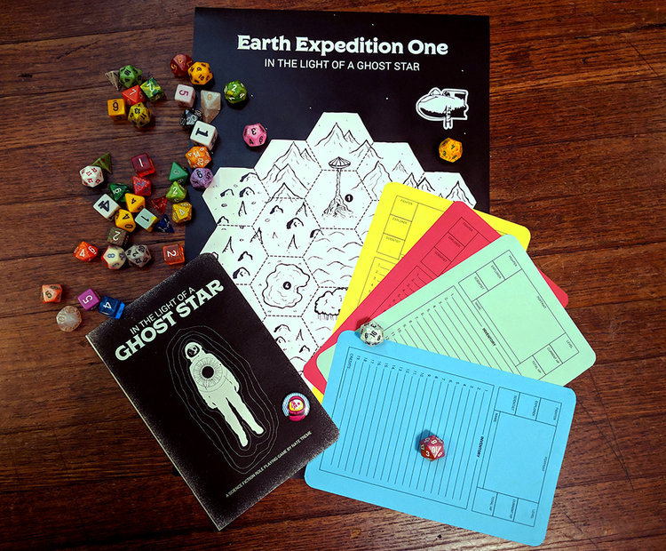

Highland Paranormal Society is celebrating Zine Month aka Zimo by printing a new zine, a business card game, and reprinting an old zine! We are taking preorders for each product below. The estimated delivery time for these is May 2022 though we expect it to be sooner, we are trying to account for any unforseen supply chain issues that may arise.
Everything on this page is a preorder, if you buy multiple preorders they will be shipped together. We have some older releases in the shop page that you can also purchase. If you purchase any non presale zines along with presale items, they will ship together when the presale items are printed. If you want to get your non presale items earlier make sure you purchase them seperately from the presale items.
Greetings, pilgrim. Obviously, you are not content wallowing in mundanity when worlds of adventure await exploration! As you sojourn on the path to holiness, overcoming the faults of the flesh, surely you will find meaning, salvation, the face of God herself-, or at the very least, treasure!
Pilgrims of Misfortune is an open world dice game in the folk gaming tradition. One player is the Comptroller who presents an imaginary world to the other players who control Player Characters that interact with it. It takes inspiration from games such as Cairn, The Black Hack, and Dungeons & Dragons: Forbidden Edition. As tradition dictates, it uses random character generation and simple guidelines for adjudicating any uncertainties that arise during otherworldly explorations.
This tome contains the rules for creating characters and playing the game but that is not all! It will also include a mapped portion of another world for these characters to explore, with holy shrines, ancient tombs, and powerful relics to find! But all is not sunshine and smiles, pilgrim! For also in this tome are dangers that await you, things that creep in the dark, things that hunger for blood, things that should not be considered lightly. There are friends and foes to be met in the otherworlds, and they are rarely what they appear to be. You will have access to an incomplete pdf version immediately up purchase that will be updated as development continues.
Pronounced "ro-day", this is the base system that Pilgrims of Misfortune is built on, simple enought to fit on a business card. This includes 3 cards: the rules card, the character card, and an adventure card. The core mechanic of the game uses a twelve side die that must be rolled higher than a character's negative characteristics to succeed at uncertain tasks.
The cult tabletop game of gonzo scifi adventure is getting reprinted! The first run was printed and assemble in my living room and sold out almost immediately. It has gone on to reach 40,000 downloads in digital format but will now be available again physically for the first time in four years. Meet robots, battle apes, cockroach scientist and more!
 Earth was abandoned ages ago during the red giant expansion. Now, dimly lit by the ghost light of a dead white dwarf, it lies layered with eons of forgotten civilizations. From the warmth of Martian reactor cities, scavengers hire illegal transportation to earth to delve into its depths, looking for ancient treasures. There they must deal with ghosts, machines, and the strange life that has evolved on humankind’s abandoned home planet. In The Light Of A Ghost Star is a rules-lite system and setting for science fiction roleplaying. It comes with a hex crawl adventure and random tables that can also be used with other RPG systems. Ghost Star was designed to be quick and easy to play. It’s perfect for one shot games and short campaigns. Characters can be created quickly and can die even quicker!